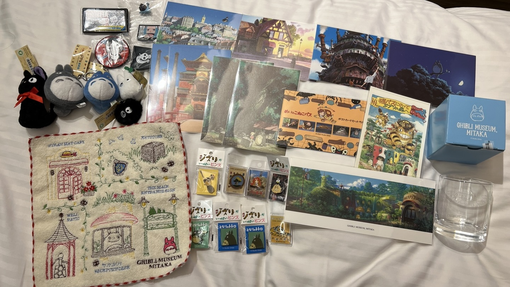
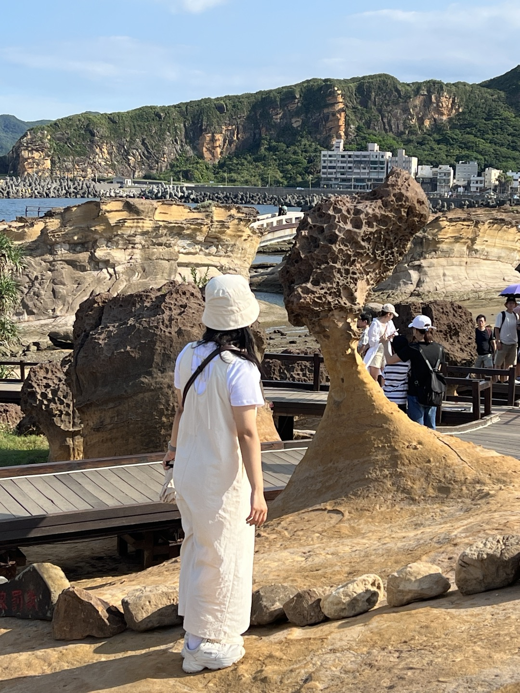
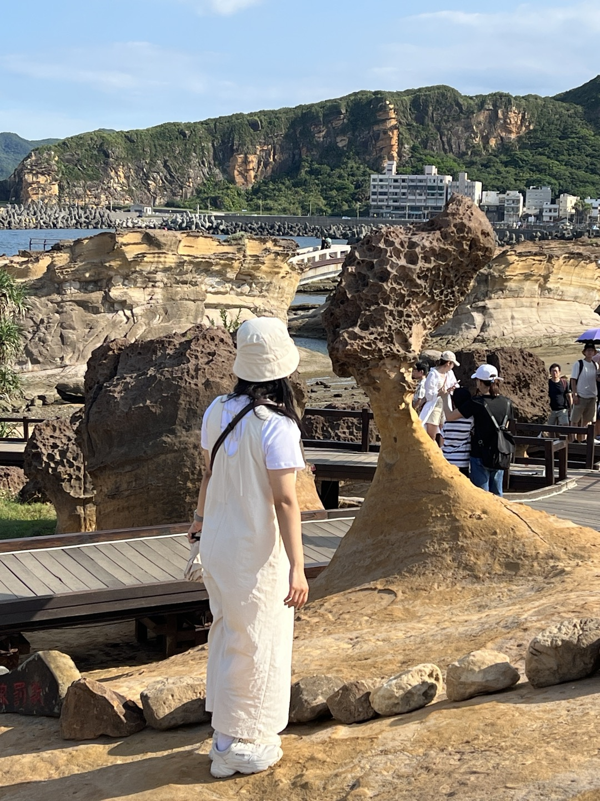

awlays😘
“MY ♥
HOBBY”
“MY ♥
HOBBY”
 

“MY ♥ HOBBY”
awlays😘
짧게 짧게 기분전환으로 여행하는걸 좋아합니다🥰
보통 여행은
지브리를 좋아해서 일본을 자주 다녀오는편이에요!
작년에는
도쿄/나고야를 다녀와서 지브리박물관이랑 지브리파크를 다녀와서
굿즈를 쓸어담아왔답니다~~~🤦♀️
그리고 카페 투어랑 걷는 걸
좋아해서 카페 투어를 하면 보통 하루에 3곳정도..? 걷기 시작하면
2,3시간정도..?
어쩌다보니 작년에 해외여행을
4번갔다온정도..?
조금 투머치한 편이에요><